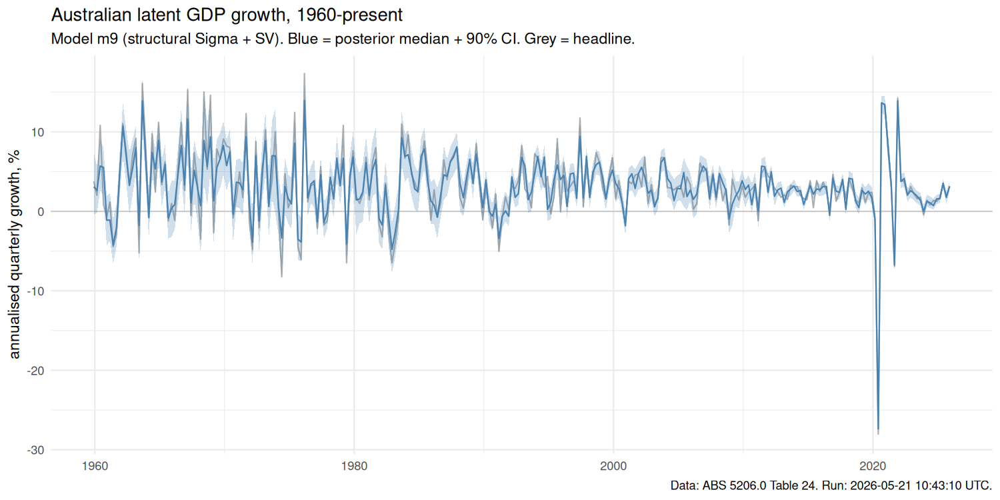
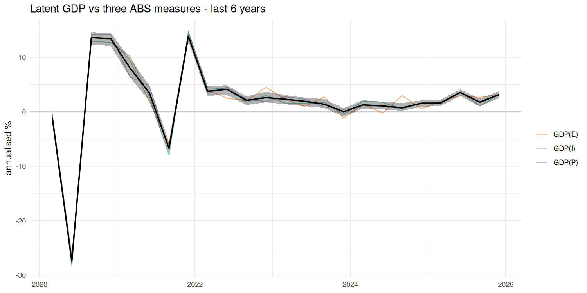

+3.15%
90% credible interval: [+2.53, +3.77] (annualised quarterly growth)
| GDP(E) expenditure-based | +3.18% |
| GDP(I) income-based | +3.14% |
| GDP(P) production-based | +3.15% |


This page publishes a Bayesian state-space estimate of Australian quarterly GDP growth that filters measurement error out of the three independent ABS measures (Expenditure, Income, Production-based GDP). The model is m9 from this repo: an AR(1) latent state with stochastic volatility on the measurement-error variances and a construction-based zero restriction on the Production-side error covariance. Background: RBA RDP 2014-12 (Rees, Lancaster & Finlay).
Data: ABS Cat. 5206.0 Table 24 (Selected Analytical Series), seasonally adjusted, chain volume measures. The page is rebuilt automatically after each quarterly release.